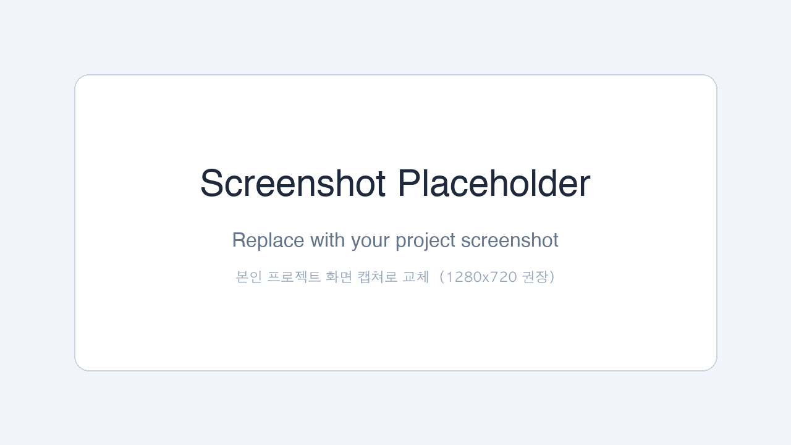

🛠 Tech Stack
- [기술 1]
- [기술 2]
- [기술 3]
- Docker
- Oracle Always Free
- GitHub Actions
🧠 어떻게 만들었나
[무엇을 만들었나 — 프로젝트의 핵심 기능 한 문장.] [어떤 기술 / 모델 / API 를 써서 어떻게 동작시키는가.] [사용자가 어떻게 쓰는가 — 입력은 무엇, 출력은 무엇.]
[무엇을 해볼지 간단히 적어보세요]

[무엇을 만들었나 — 프로젝트의 핵심 기능 한 문장.] [어떤 기술 / 모델 / API 를 써서 어떻게 동작시키는가.] [사용자가 어떻게 쓰는가 — 입력은 무엇, 출력은 무엇.]
💬 이 프로젝트 어떠세요?
GitHub 계정으로 로그인하면 댓글이 본인 리포의 GitHub Discussions에 자동 저장됩니다.